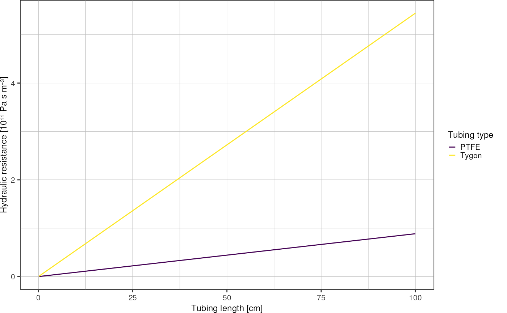
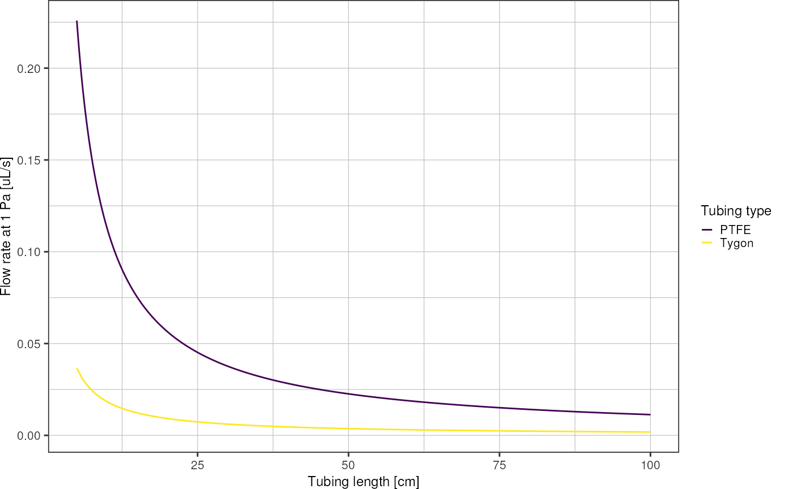

Fluid Flow
fluidics.RmdHydraulic resistance
Straight circular channel
Hydraulic analogy of Ohm’s law:
\[\Delta P = R_h Q\] with \(R_h\) hydraulic resistance.
For a (straight) channel with circular cross-section, the hydraulic resistance is defined as \(R_h = \frac{8 \mu L}{\pi r^4}\) with \(\mu\) dynamic viscosity, \(L\) channel length, and \(r\) channel radius (Bruus 2008). For water I am using \(\mu = 8.9 \cdot 10^{-4} \; \mathrm{Pa \cdot s}\).
muWater <- 8.9e-4
radiusTygon <- 0.508e-3 /2
radiusPTFE <- 0.8e-3 /2
getHydraulicResistance <- function(mu, length, radius) {
return(8 * mu * length / pi / radius^4)
}Plot hydraulic resistance over tubing length:
resistance <- tibble::tibble("length" = seq(1,1000) * 1e-3, # unit: meters
"tygon" = getHydraulicResistance(muWater, length, radiusTygon),
"ptfe" = getHydraulicResistance(muWater, length, radiusPTFE)) %>%
tidyr::pivot_longer(!length, names_to = "type", values_to = "r_hydraulic")
resistance
#> # A tibble: 2,000 × 3
#> length type r_hydraulic
#> <dbl> <chr> <dbl>
#> 1 0.001 tygon 544496703.
#> 2 0.001 ptfe 88529937.
#> 3 0.002 tygon 1088993406.
#> 4 0.002 ptfe 177059874.
#> 5 0.003 tygon 1633490109.
#> 6 0.003 ptfe 265589811.
#> 7 0.004 tygon 2177986812.
#> 8 0.004 ptfe 354119748.
#> 9 0.005 tygon 2722483515.
#> 10 0.005 ptfe 442649685.
#> # … with 1,990 more rows
ggplot(resistance, aes(x = length*1e2, y = r_hydraulic*1e-11, color = type)) +
geom_line() +
scale_color_viridis_d(labels = c("PTFE", "Tygon")) +
labs(x = "Tubing length [cm]",
y = "Hydraulic resistance [10¹¹ Pa s m⁻³]",
color = "Tubing type") +
theme_pretty()
Plot flow rate resulting from pressure drop of 1 Pa as function of tubing length:
resistance %>%
dplyr::mutate("q" = 1 / r_hydraulic) %>%
dplyr::filter(length >= 0.05) %>% # ignore tubing lengths < 5cm
ggplot(aes(x = length*1e2, y = q * 1e9, color = type)) + # convert m^3/s into uL/s
geom_line() +
scale_color_viridis_d(labels = c("PTFE", "Tygon")) +
labs(x = "Tubing length [cm]",
y = "Flow rate at 1 Pa [uL/s]",
color = "Tubing type") +
theme_pretty()